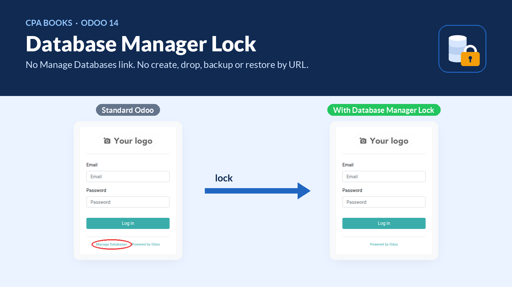
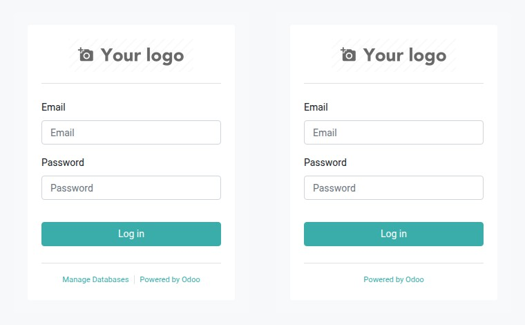
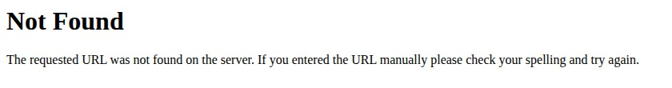
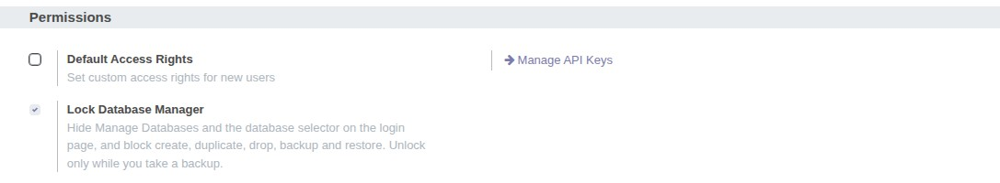

<div style="font-family:-apple-system,BlinkMacSystemFont,'Segoe UI',Roboto,Helvetica,Arial,sans-serif;color:#14213D;background-color:#FFFFFF;padding:8px 4px 24px;line-height:1.55;">
<div style="max-width:1120px;margin:0 auto;">

<!-- ============ HERO ============ -->
<div style="background-color:#102A52;border-radius:22px;padding:30px 30px 26px;margin:0 0 22px;">
<table width="100%" cellpadding="0" cellspacing="0" style="border-collapse:collapse;"><tr>
<td valign="middle">
<div style="font-size:13px;font-weight:800;color:#93C5FD;letter-spacing:1.5px;margin:0 0 6px;">CPA BOOKS · ODOO 14 · SECURITY</div>
<div style="font-size:34px;line-height:1.15;font-weight:800;color:#FFFFFF;margin:0 0 10px;">Database Manager Lock</div>
<div style="font-size:17px;color:#D6E6FF;max-width:720px;margin:0 0 16px;">Keep visitors away from the Odoo database manager. The <b style="color:#FFFFFF;">Manage Databases</b> link and the database <b style="color:#FFFFFF;">Select</b> button leave the login page, and the database manager URLs are blocked on the server.</div>
<span style="display:inline-block;background-color:#22C55E;color:#FFFFFF;border-radius:999px;padding:6px 14px;font-size:13px;font-weight:700;margin:3px 4px 3px 0;">Clean login page</span><span style="display:inline-block;background-color:#3B82F6;color:#FFFFFF;border-radius:999px;padding:6px 14px;font-size:13px;font-weight:700;margin:3px 4px;">URLs blocked</span><span style="display:inline-block;background-color:#F59E0B;color:#FFFFFF;border-radius:999px;padding:6px 14px;font-size:13px;font-weight:700;margin:3px 4px;">On / off in Settings</span>
</td>
<td width="150" valign="middle" align="right"></td>
</tr></table>
</div>



<!-- ============ PROBLEM ============ -->
<div style="background-color:#EAF3FF;border-radius:18px;padding:22px 26px;margin:0 0 30px;">
<div style="font-size:22px;font-weight:800;color:#102A52;margin:0 0 6px;">Your login page is <span style="color:#2166C1;">not a server console</span></div>
<div style="font-size:15px;color:#475569;">Standard Odoo shows "Manage Databases" to everyone who opens the login page. Behind it are create, duplicate, drop, backup and restore, protected only by the master password. This app removes the link and blocks those URLs, so nobody can reach them from the browser.</div>
</div>

<!-- ============ FEATURE 1 ============ -->
<div style="margin:0 0 12px;font-size:13px;font-weight:800;color:#2166C1;letter-spacing:1.2px;">LOGIN PAGE</div>
<div style="font-size:26px;font-weight:800;color:#102A52;margin:0 0 8px;">Only what your users need: <span style="color:#2166C1;">email and password</span></div>
<div style="font-size:15px;color:#475569;margin:0 0 14px;">Left: standard Odoo. Right: with Database Manager Lock. The "Manage Databases" link and the database "Select" button are gone. "Powered by Odoo" and your logo stay as they are.</div>


<!-- ============ FEATURE 2 ============ -->
<div style="background-color:#F2EDFF;border-radius:18px;padding:24px 24px 18px;margin:0 0 34px;">
<div style="margin:0 0 12px;font-size:13px;font-weight:800;color:#7C3AED;letter-spacing:1.2px;">SERVER SIDE</div>
<div style="font-size:26px;font-weight:800;color:#102A52;margin:0 0 8px;">Typing the URL <span style="color:#7C3AED;">does not work either</span></div>
<div style="font-size:15px;color:#475569;margin:0 0 14px;">Hiding a link is not enough. These URLs answer <b>404 Not Found</b> while the lock is on, and every blocked attempt is written to the server log with the visitor's IP address:</div>
<table width="100%" cellpadding="0" cellspacing="0" style="border-collapse:separate;margin:0 0 14px;"><tr>
<td width="50%" valign="top" style="padding:4px;"><div style="background-color:#FFFFFF;border-radius:12px;padding:12px 16px;font-family:monospace;font-size:13px;color:#14213D;">/web/database/manager<br/>/web/database/selector<br/>/web/database/create<br/>/web/database/duplicate</div></td>
<td width="50%" valign="top" style="padding:4px;"><div style="background-color:#FFFFFF;border-radius:12px;padding:12px 16px;font-family:monospace;font-size:13px;color:#14213D;">/web/database/drop<br/>/web/database/backup<br/>/web/database/restore<br/>/web/database/change_password</div></td>
</tr></table>
<div style="font-size:14px;color:#475569;margin:0 0 12px;"><code>/web/database/list</code> (used by the Odoo mobile app) only returns the current database, so the other database names on the server are not listed.</div>

</div>

<!-- ============ FEATURE 3 ============ -->
<div style="margin:0 0 12px;font-size:13px;font-weight:800;color:#2166C1;letter-spacing:1.2px;">SETTINGS</div>
<div style="font-size:26px;font-weight:800;color:#102A52;margin:0 0 8px;">Unlock for a backup, <span style="color:#2166C1;">lock again</span></div>
<div style="font-size:15px;color:#475569;margin:0 0 14px;">Settings &gt; General Settings &gt; Permissions &gt; <b>Lock Database Manager</b>. It is on after installation. An administrator can turn it off to use the database manager (for example to take a backup), then turn it back on.</div>


<!-- ============ HOW IT WORKS ============ -->
<div style="background-color:#F7F4FF;border-radius:18px;padding:24px;margin:0 0 34px;">
<div style="text-align:center;font-size:26px;font-weight:800;color:#102A52;margin:0 0 16px;">How it works</div>
<table width="100%" cellpadding="0" cellspacing="0" style="border-collapse:separate;"><tr>
<td width="33%" valign="top" style="padding:6px;"><div style="background-color:#FFFFFF;border-radius:16px;padding:16px;"><div style="display:inline-block;background-color:#2166C1;color:#FFFFFF;border-radius:999px;width:30px;height:30px;line-height:30px;text-align:center;font-weight:800;margin:0 0 8px;">1</div><div style="font-size:15px;font-weight:800;color:#102A52;">Install</div><div style="font-size:13px;color:#64748B;">The lock is on at once. No configuration needed.</div></div></td>
<td width="33%" valign="top" style="padding:6px;"><div style="background-color:#FFFFFF;border-radius:16px;padding:16px;"><div style="display:inline-block;background-color:#2166C1;color:#FFFFFF;border-radius:999px;width:30px;height:30px;line-height:30px;text-align:center;font-weight:800;margin:0 0 8px;">2</div><div style="font-size:15px;font-weight:800;color:#102A52;">Users log in as usual</div><div style="font-size:13px;color:#64748B;">The login page only shows email and password.</div></div></td>
<td width="33%" valign="top" style="padding:6px;"><div style="background-color:#FFFFFF;border-radius:16px;padding:16px;"><div style="display:inline-block;background-color:#2166C1;color:#FFFFFF;border-radius:999px;width:30px;height:30px;line-height:30px;text-align:center;font-weight:800;margin:0 0 8px;">3</div><div style="font-size:15px;font-weight:800;color:#102A52;">Unlock when needed</div><div style="font-size:13px;color:#64748B;">An administrator switches the lock off in Settings, uses the manager, and switches it on again.</div></div></td>
</tr></table>
</div>

<!-- ============ GOOD TO KNOW ============ -->
<div style="border:2px solid #E7EEF5;border-radius:18px;padding:20px 24px;margin:0 0 34px;">
<div style="font-size:20px;font-weight:800;color:#102A52;margin:0 0 8px;">Good to know</div>
<div style="font-size:14px;color:#475569;margin:0 0 6px;">• The lock works for every request that Odoo links to your database: a server with one database, a server with a <code>dbfilter</code> (one database per domain), or a browser that already opened your database.</div>
<div style="font-size:14px;color:#475569;margin:0 0 6px;">• On a server that shows several databases and has no <code>dbfilter</code>, Odoo answers database-less requests with its server-wide modules only. For a full lock there, also load this module server-wide: <code>--load=base,web,cpabooks_db_lock</code> (or <code>server_wide_modules = base,web,cpabooks_db_lock</code> in odoo.conf). It then stays locked for those requests.</div>
<div style="font-size:14px;color:#475569;">• It does not replace a strong master password or <code>list_db = False</code>. Use them together.</div>
</div>

<!-- ============ COMPATIBILITY ============ -->
<table width="100%" cellpadding="0" cellspacing="0" style="border-collapse:separate;margin:0 0 34px;"><tr>
<td width="50%" valign="top" style="padding:6px;"><div style="background-color:#EAF3FF;border-radius:18px;padding:20px;">
<div style="font-size:20px;font-weight:800;color:#102A52;margin:0 0 8px;">Compatibility</div>
<div style="font-size:14px;color:#475569;margin:0 0 4px;"><b>Odoo version:</b> 14.0</div>
<div style="font-size:14px;color:#475569;margin:0 0 4px;"><b>Tested on:</b> Odoo 14 Community</div>
<div style="font-size:14px;color:#475569;"><b>Depends on:</b> <code>web</code> and <code>base_setup</code> (both part of every Odoo install).</div>
</div></td>
<td width="50%" valign="top" style="padding:6px;"><div style="background-color:#102A52;border-radius:18px;padding:20px;">
<div style="font-size:20px;font-weight:800;color:#FFFFFF;margin:0 0 8px;">Support</div>
<div style="font-size:14px;color:#D6E6FF;margin:0 0 4px;">CPA Books technical support</div>
<div style="font-size:14px;color:#D6E6FF;margin:0 0 4px;">Email: <a href="mailto:info@cpabooks.org" style="color:#93C5FD;">info@cpabooks.org</a></div>
<div style="font-size:14px;color:#D6E6FF;">Web: <a href="https://www.cpabooks.org" style="color:#93C5FD;">www.cpabooks.org</a></div>
</div></td>
</tr></table>

</div>
</div>
